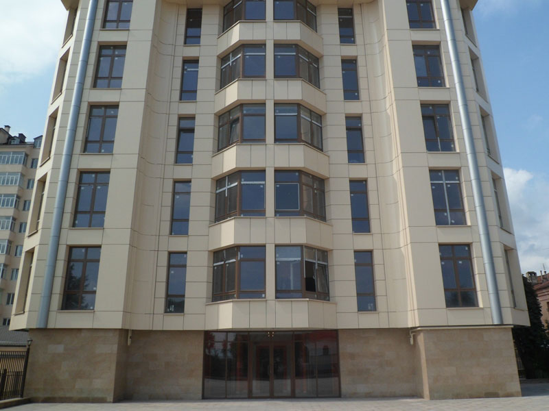
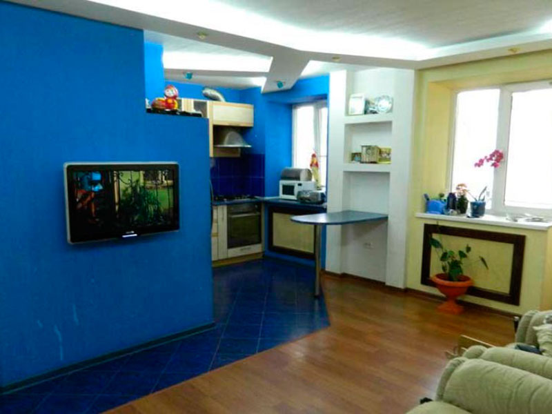
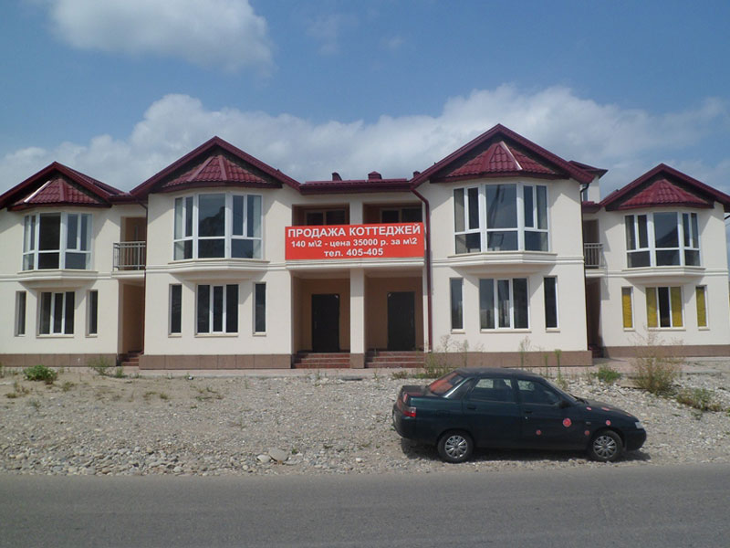
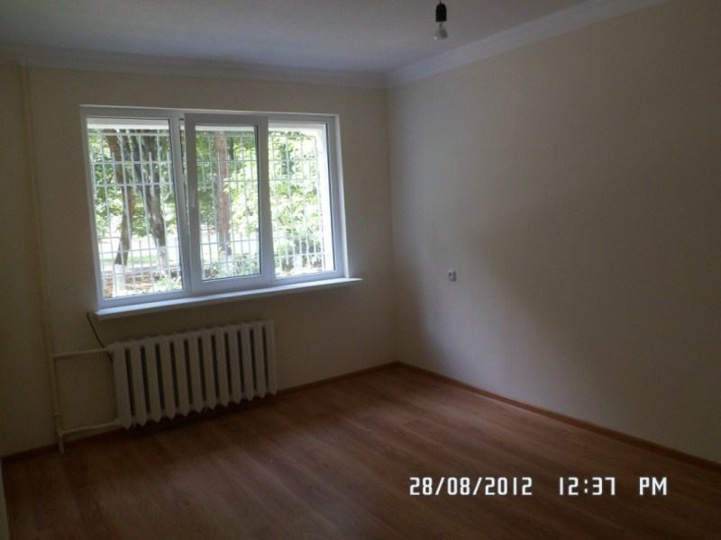
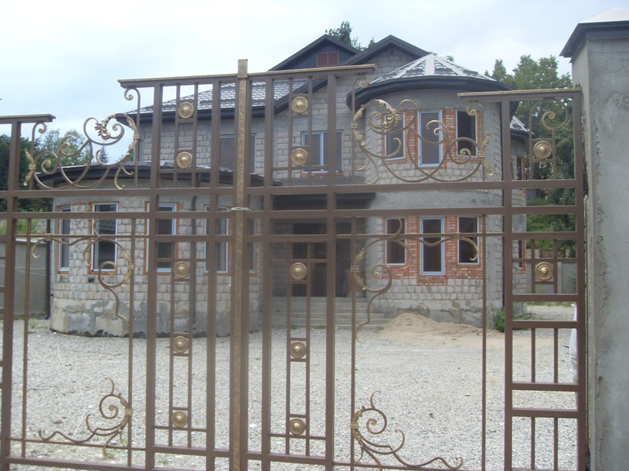
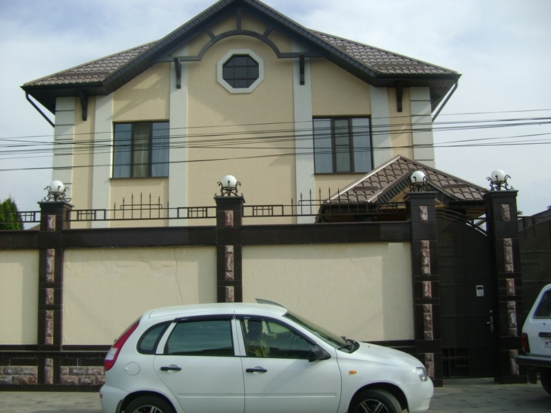

Фотогалерея

ул.Пушкина,3-комн.кв., 3/6 эт., пл. 134 кв.м., комн.изолир., у/п, неугловая, окна вых.на обе стороны, евролюкс ремонт, и/отопление

ул.Головко, 1-комн.кв. 2/2 эт., пл. 30/--/6 кв.м., к/д, балкон из комнаты, окна вых.во двор, капитальный ремонт,чисто +гараж
- 
новострой по ул. И.Арманд от 130 кв.м. до 184 кв.м., элитный дом, лифт работает, холл оборудован подземн.парковкой, коммуникац.пров.до квартиры, будут устанавл.видеонабл.

ул. Байсултанова, 4-комн.кв., 1/5 эт., пл. 63/--/6+зал=27 кв.м., комн.смежн.-изолир., с/у совмещ., к/д, обычн.планир.+пристройка, угловая, окна вых.на обе стор., кондиц., встроен.кухня,спутник.тв

новострой по Тарчокова, от 67 до 152 кв.м., подведены все коммуникации,кроме отопления (индивидуальное),высота потол. 3,20 м.
- 
ул. Чкалова, 3-комн.кв., 2/3 эт., пл. 56/--/5,5 совмещ. с залом (студия), к/д, комн.изолир., с/у совмещ., балкон с зала, неугловая,окна вых.во двор, е/рем., встроен.техника,кондиционер

ул.Мечникова, 2-х эт. Кирп. Недостр. Дом, 2011-2018 г.п., коробка ( окна, крыша металлочерепица, стяжка, штукат., проводка), своб. План., пл. 380/--/17 кв.м., комн. изол., ц/к, 3,8 сот., шир. 15 м., во дворе грунт, высокий блочный забор, ворота кованые

ул.Профсоюзная, 3-комн.кв., 1/5 эт., пл. 100/--/10 кв.м., комн изол.. с/у разд., балкона нет, к/д, у/п., угловая, окна вых. на обе стороны.. кап. ремонт

Дом по ул. Орджоникидзе, 2-х эт.дом + цок.эт., 2010 г.п., пл. 500/--/20 кв.м., 4 спальни, 2 холла, 2 столовые, ц/к, кап/рем, 5 сот., шир. 18 м., навес на 2 машины, лет/кухня, гараж, озеленение, дом утопл. в конец уч-ка

ул. Щорса, 2-эт.,блочный дом, пл. 2,75 сотых общая площадь всего, пл.кух.28 кв.м., 4 спальни, 3 с/у, зал 45 кв.м., +помещения для коммерч.деят-ти 45 кв.м., во дворе плитка
- 
Коттеджи по Атажукина, 1,2 этаж общ.пл. 140 кв.м., 1 эт.-70 кв.м., 2 эт.-70кв.м., свободная планировка, окна вых.на обе стороны, нет стяжки, штукатурки
- 
ул. Кулиева 2-комн.квартира , 1/5 эт., пл. 50/--/12 кв.м, к/д, неугловая, комн.изолир., с/у совмещ., кап.ремонт, пластик.окна, ламинат, новая сантехника, плитка на полу.
ул. Репина,2-эт. Кирпичн.дом + цоколь ,20111 г.п., пл. 519/--/28 кв.м., 12 комнат, комн.изолир., ц/к, есть ремонт, летняя кухня, большой двор, всё новое, финская кровля,пл.окна, современ.отопление, автоподача воды
ул. Мусова,2-комн.кв., 2/5 эт., пл. 52/--/8 кв.м., к/д, у/п, комн.изолир., с/у раздельн., лоджия из комнаты застеклённая, ремонт,ламинат везде, встроенная кухня, и/отопление
ул. Байсултанова новострой, 1/9 эт., пл. 64/--/14 кв.м., комн.раздельн., без ремонта
ул. Хуранова новострой, 6/8эт., пл. 94,7 кв.м., жилая - 42,9 кв.м., кухня - 15,2 кв.м., комн. Разд., су смежный, балкон из комнаты, евроремонт, встр. Кухня, к/д.
ул. Московская новострой, 6/6 эт., пл. 90/--/14 кв.м., комн. изол., с/у разд., лодж. Из спальни, к/д, у/п, неугловая, окна вых. На обе стороны, кап/рем. Свежий
ул. Мечиева , 3-эт. Кирпичный Дом 2010 г.п., пл. 425,5/--/10 кв.м., 8 изолир.комнат ( 1эт.- 1 комн.+кухня, 2эт.- 3 комн.+ с/у, 3 эт.- 2 комн., цоколь- гараж+холл), участ. 4 сот., есть въезд для а/м
ул. Кулиева, 8/9 эт., пл. 76/--/14 кв.м., комн. Изол., с/у разд., балкон объед. С кухней, кп/д, у/п, угловая, но утепл., окна вых. На обе стороны, е/рем 1 год, сигнализ., паркет, дор.двери, испанская плитка
ул. Мичурина, 2-х эт. Кирп. Дом + цок, 2002 г.п., пл. 426/150/27 кв.м., 5 из. Комн., 2 холла, 2 с/у, ц/к, 2002 г.п. отл. Сост., 7 сот., шир. 20 м., лет.кухня недостр., 2 гаража, двор выложен плиткой, въезд для а/м, на несколько а/м, паркет, встр. Кухня, камин.зал на цок.эт.
- 
Дом в курортной зоне, 2-эт. дом +мансарда, из туфа+саман, 2018г.п.,8 изолир.комнат под чистовую отделку,уч. 10 соток, гараж,летн.барбекю, во дворе щебень.,два въезда.
ул. Мостовая, 2-х эт. Дом из блока + цок.эт.+манс.эт., пл. 450/330/17 кв.м., 6 изол. Комн., ц/к, 2006 г.п., кап/рем., облицован красным кирп., 6 сот., шир. 16 м., навес, лет.кух.(Закр. Бассейн, сауна) - 130 кв.м., подз. Гараж, двор вылож. Плиткой, въезд на 2 а/м, полностью с мебелью
- 
ул. Ушанёва,2-х эт. Блоч. Дом + цок. Эт., 1991 г.п. 92007г. Рестоврация), пл. 509/--/17 кв.м., 5 изол. Комн. + 2 холла, ц/к, кап/рем, 6,5 сот., шир. 15 м., навес с камином, гараж, двор выложен плиткой, въезд на 3 а/м, бильярдный зал, подвал под гаражом
ул. Шогенова,2-комн.кв., 2/9 эт., пл. 53/28/9 кв.м., комн. Изол., с/у разд., лодж. Из спальни, к/д, у/п, неугловая, окна вых. На ул. Шогенова, кос/рем, чистая, возм. Пристр., трубы новые
{kind=link}
{kind=link}
{kind=link}
{kind=link}
{kind=link}
{kind=link}
{kind=link}
{kind=link}
{kind=link}
{kind=link}
{kind=link}
{kind=link}
{kind=link}
{kind=link}
{kind=link}
{kind=link}